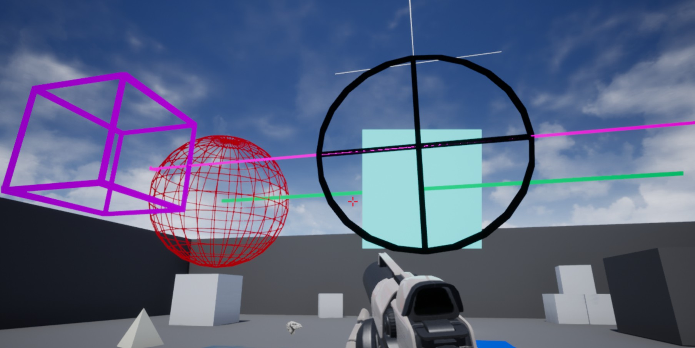

6. 绘制 UE4 辅助调试的形状
接上一节，在本教程中，我们将绘制 DrawDebugHelpers.h 提供的多个调试形状。DrawDebugHelpers.h 包含的相关的所有内容都是由 UE4 提供的。
创建一个新的 C++ Actor 子类并将其命名为 MyDrawDebugHelpers 。在头文件中，我们将在 .h 中声明将在 .cpp 文件中使用的变量，它们也可以在编辑器中进行编辑。我们将创建一个 FVectors，一个 FMatrix，一个 FBox，和一个 FTransform。
该头文件代码如下：
#pragma once
#include "CoreMinimal.h"
#include "GameFramework/Actor.h"
#include "MyDrawDebugHelpers.generated.h"
UCLASS()
class UNREALCPP_API AMyDrawDebugHelpers : public AActor
{
GENERATED_BODY()
public:
// Sets default values for this actor's properties
AMyDrawDebugHelpers();
protected:
// Called when the game starts or when spawned
virtual void BeginPlay() override;
public:
// Called every frame
virtual void Tick(float DeltaTime) override;
// declare location variables
UPROPERTY(EditAnywhere, Category = "Locations")
FVector LocationOne;
UPROPERTY(EditAnywhere, Category = "Locations")
FVector LocationTwo;
UPROPERTY(EditAnywhere, Category = "Locations")
FVector LocationThree;
UPROPERTY(EditAnywhere, Category = "Locations")
FVector LocationFour;
UPROPERTY(EditAnywhere, Category = "Locations")
FVector LocationFive;
UPROPERTY(EditAnywhere, Category = "Locations")
FMatrix CircleMatrix;
UPROPERTY(EditAnywhere, Category = "Locations")
FBox MyBox;
UPROPERTY(EditAnywhere, Category = "Locations")
FTransform MyTransform;
};
同时别忘了还要 include 头文件 DrawDebugHelpers.h
#include "MyDrawDebugHelpers.h"
// include draw debu helpers header file
#include "DrawDebugHelpers.h"
在.cpp文件中，我们将首先为变量指定默认值。下面是我们将为默认值添加的初始化代码。
// Sets default values
AMyDrawDebugHelpers::AMyDrawDebugHelpers()
{
// Set this actor to call Tick() every frame. You can turn this off to improve performance if you don't need it.
PrimaryActorTick.bCanEverTick = true;
// init variables with values
LocationOne = FVector(0,0,600);
LocationTwo = FVector(0,-600,600);
LocationThree = FVector(0,600,600);
LocationFour = FVector(-300,0,600);
LocationFive = FVector(-400,-600,600);
MyBox = FBox(FVector(0,0,0), FVector(200,200,200));
}
接下来，我们将在 BeginPlay() 函数中绘制许多不同的形状。
下面是我们将添加到 BeginPlay() 来绘制所有形状的函数。
// Called when the game starts or when spawned
void AMyDrawDebugHelpers::BeginPlay()
{
Super::BeginPlay();
DrawDebugPoint(GetWorld(), LocationOne, 200, FColor(52,220,239), true);
DrawDebugSphere(GetWorld(), LocationTwo, 200, 26, FColor(181,0,0), true, -1, 0, 2);
DrawDebugCircle(GetWorld(), CircleMatrix, 200, 50, FColor(0,104,167), true, -1, 0, 10);
DrawDebugCircle(GetWorld(), LocationFour, 200, 50, FColor(0,0,0), true, -1, 0, 10);
DrawDebugSolidBox(GetWorld(), MyBox, FColor(20, 100, 240), MyTransform, true);
DrawDebugBox(GetWorld(), LocationFive, FVector(100,100,100), FColor::Purple, true, -1, 0, 10);
DrawDebugLine(GetWorld(), LocationTwo, LocationThree, FColor::Emerald, true, -1, 0, 10);
DrawDebugDirectionalArrow(GetWorld(), FVector(-300, 600, 600), FVector(-300, -600, 600), 120.f, FColor::Magenta, true, -1.f, 0, 5.f);
DrawDebugCrosshairs(GetWorld(), FVector(0,0,1000), FRotator(0,0,0), 500.f, FColor::White, true, -1.f, 0);
}
编译代码。将你的新 Actor 实例对象拖放到场景中，则形状将在游戏中绘制。同时还可以在 Actor 的详细信息面板中编辑那些变量。
下面是最终的 .cpp 代码。
#include "MyDrawDebugHelpers.h"
// include draw debu helpers header file
#include "DrawDebugHelpers.h"
// Sets default values
AMyDrawDebugHelpers::AMyDrawDebugHelpers()
{
// Set this actor to call Tick() every frame. You can turn this off to improve performance if you don't need it.
PrimaryActorTick.bCanEverTick = true;
// init variables with values
LocationOne = FVector(0,0,600);
LocationTwo = FVector(0,-600,600);
LocationThree = FVector(0,600,600);
LocationFour = FVector(-300,0,600);
LocationFive = FVector(-400,-600,600);
MyBox = FBox(FVector(0,0,0), FVector(200,200,200));
}
// Called when the game starts or when spawned
void AMyDrawDebugHelpers::BeginPlay()
{
Super::BeginPlay();
DrawDebugPoint(GetWorld(), LocationOne, 200, FColor(52,220,239), true);
DrawDebugSphere(GetWorld(), LocationTwo, 200, 26, FColor(181,0,0), true, -1, 0, 2);
DrawDebugCircle(GetWorld(), CircleMatrix, 200, 50, FColor(0,104,167), true, -1, 0, 10);
DrawDebugCircle(GetWorld(), LocationFour, 200, 50, FColor(0,0,0), true, -1, 0, 10);
DrawDebugSolidBox(GetWorld(), MyBox, FColor(20, 100, 240), MyTransform, true);
DrawDebugBox(GetWorld(), LocationFive, FVector(100,100,100), FColor::Purple, true, -1, 0, 10);
DrawDebugLine(GetWorld(), LocationTwo, LocationThree, FColor::Emerald, true, -1, 0, 10);
DrawDebugDirectionalArrow(GetWorld(), FVector(-300, 600, 600), FVector(-300, -600, 600), 120.f, FColor::Magenta, true, -1.f, 0, 5.f);
DrawDebugCrosshairs(GetWorld(), FVector(0,0,1000), FRotator(0,0,0), 500.f, FColor::White, true, -1.f, 0);
}
// Called every frame
void AMyDrawDebugHelpers::Tick(float DeltaTime)
{
Super::Tick(DeltaTime);
}
最终效果如下：
